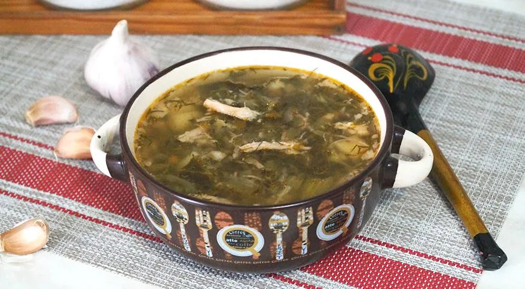
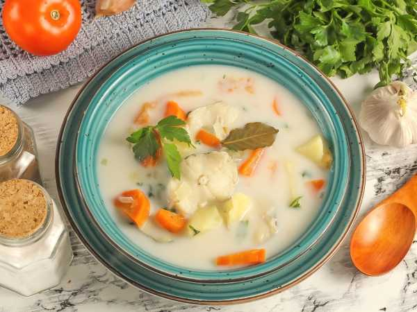

Добро пожаловать в наше кафе!
Здесь продаются несколько блюд из Вологодской кухни.
Сегодня у нас в меню популярны:
супы, горячее и каши.
Супы
Серые щи.
Основа блюда — квашеные зелёные листы капусты, которые измельчают в крошево.
Уха по-великоустюгски
Её варят на разбавленном молоке, куда добавляется мелкая рыбёшка.